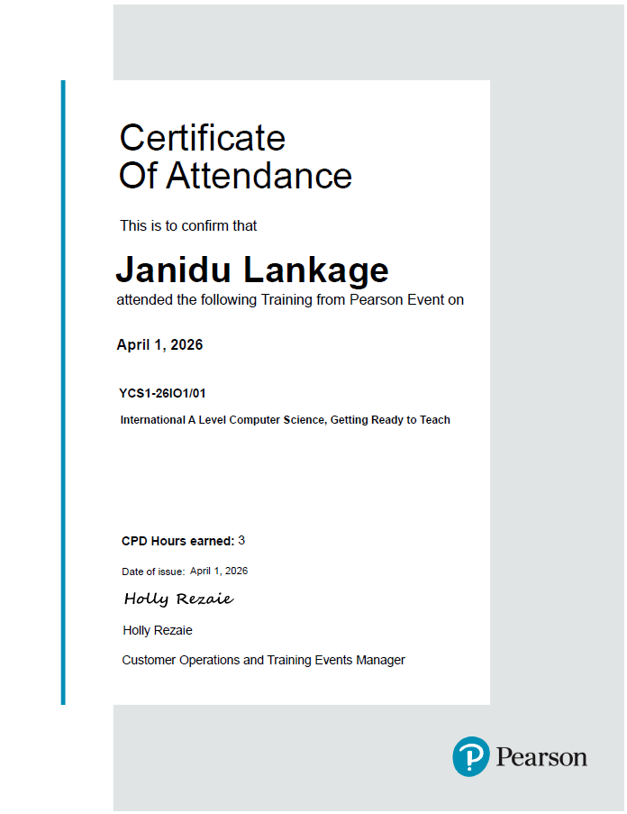
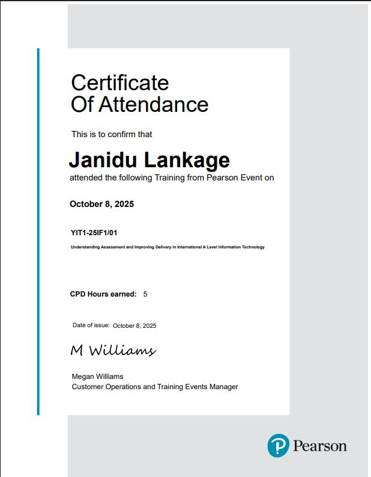
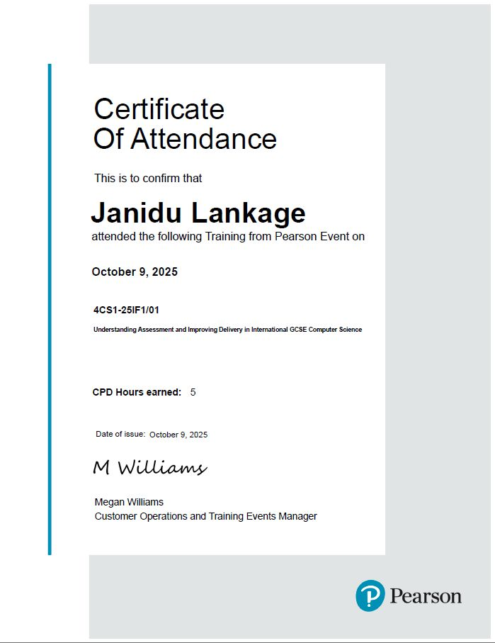

EDUCATOR
Janidu Lankage
Software Engineer & Lecturer
.NET Core ArchitectureI build AI and .NET Core systems by day and mark, teach, and design Cambridge & Edexcel Computer Science & IT curricula the rest of the time — two disciplines that, it turns out, run on the same logic.
About
I'm a software engineer with strong expertise in .NET Core application development, specialising in scalable Web APIs and MVC applications.
Beyond engineering, I'm deeply invested in artificial intelligence and data science — an interest reflected in my MSc in Data Science & AI, currently underway at the University of Sri Jayewardenepura.
Parallel to my engineering career, I'm an educator and tutor with years of experience guiding students through British-curriculum STEM subjects, having sat the Edexcel IAL and IGCSE examinations myself. As Subject Head for Cambridge and Edexcel IAL Computer Science, I design examiner-style resources, run revision seminars, and mentor learners toward academic excellence.
Engineer
Building robust systems with .NET Core, Python, Web APIs, and modern frameworks.
Data enthusiast
Exploring AI, analytics, and data engineering .
Educator
Leading Cambridge & Edexcel Computer Science tuition and curriculum design.
Services offered
Tutoring across three examination boards, from IGCSE through International A Level.
Pearson Edexcel
- › IAL: Information Technology, Computer Science, Physics
- › IGCSE (O/L): ICT, Computer Science, Physics, Biology, Chemistry, Single Award Science
- › GCSE (O/L): ICT, Computer Science, Physics, Biology, Chemistry
Cambridge
- › IAL / GCE A-Level: Computer Science, Information Technology
- › IGCSE / GCE O-Level: ICT, Computer Science
Oxford AQA
- › GCSE / IGCSE: ICT, Computer Science, Physics, Biology, Chemistry
Special lecturing
Education
MSc Data Science & AI
University of Sri JayewardenepuraPostgraduate Diploma in Education Management & Leadership
OTHM Level 7BSc (Hons) Software Engineering
Cardiff Metropolitan UniversityHigher Diploma in Computing and Software Engineering
Cardiff Metropolitan UniversityGateway College, Kandy
Edexcel International A/L (2017/18) & IGCSE O/L (2015/16)- – Deputy Head Prefect, 2017–2018
- – Prefect, 2016–2018
Experience
Visiting Lecturer
ESOFT Metro Campus- –Pearson BTEC HND Computing
- –Diploma in ICT (DIIT)
Teacher in Charge, Programming Club
Royal Institute International School, Nugegoda- –Provide Strategic Direction: Guide the club in achieving its vision of empowering students to become creative problem-solvers through technology.
- –Facilitate Learning Opportunities: rganize and oversee coding workshops, programming challenges, tech talks, and project-based learning activities.
- –Mentor and Support Students: Provide guidance to student leaders and members in planning and executing club initiatives.
- –Promote Collaborative Learning: Create opportunities for students to work together on programming projects, hackathons, and competitions.
- –Monitor Club Progress: Track the effectiveness of club activities and student engagement.
- –Ensure Student Welfare and Discipline: Maintain a safe, inclusive, and respectful learning environment.
Teacher in Charge, Prefect's Guild
Royal Institute International School, Nugegoda- –Act as the communication bridge between the prefect guild and school management
- –Monitor prefect attendance at duties, assemblies, and events, reporting absences
- –Relay directives and gather feedback between management and prefects
- –Coordinate meetings and relay real-time instructions during school events
- –Enforce school standards on punctuality, dress code, and discipline
- –Report on prefect performance and any negligence or breaches
Head of Subject — Edexcel IAL Computer Science
Royal Institute International School- –Spearhead the design and oversight of lesson plans and schemes of work
- –Appoint paper setters and moderators
- –Maintain academic integrity in Computer Science and Python programming
Head of Subject — Cambridge IAL Computer Science
Royal Institute International School- –Lead design and moderation of lesson plans and schemes of work
- –Appoint paper setters and moderators
- –Align teaching with international standards and modern methodology
A/L IT & Computer Science Teacher
Royal Institute International School- –Deliver Edexcel IAL AS/A2 Information Technology
- –Deliver Cambridge AS/A2 Computer Science (9618)
- –Member of the Disciplinary Committee
Exam Invigilator
Royal Institute International SchoolEnsured the smooth, fair, and secure conduct of Edexcel and Cambridge examinations at the Royal Institute Campus.
- –Supervised candidates under strict Edexcel and Cambridge regulations
- –Verified candidate identity and distributed exam materials
- –Monitored conditions to prevent malpractice
- –Recorded attendance, managed timings, and collected scripts securely
IT & Computer Science Teacher
Royal Institute International School- –Cambridge GCE O/L Computer Science
- –National GCE O/L ICT
- –Cambridge Lower Secondary Computing, Grades 6 & 8
Software Engineer
Q-Excess Pvt LtdAdvanced from intern to engineer on the PC team for RMEx, a collections-management platform used globally.
- –Built and maintained .NET Core / ASP.NET Core Web API and MVC applications
- –Supported deployment and production issue resolution via Kayako
- –Performed log reviews and root-cause diagnostics on financial workflows
- –Worked closely with QA to speed up testing and resolution
Private Tutor
Cambridge, Edexcel & Oxford AQA STEM subjectsExam-focused instruction across Computer Science, IT, and the sciences, from Lower Secondary through A Level.
- –Cambridge IAL Computer Science, Edexcel IAL IT, Computer Science & Physics
- –Edexcel IGCSE ICT, Computer Science, Biology, Chemistry, Physics & Maths
- –Edexcel iSecondary and Cambridge Lower Secondary Science & Computer Science
- –Oxford AQA Biology, Chemistry, Physics and National GCE O/L ICT
Professional development
International A Level Computer Science, Getting Ready to Teach
Pearson · June 2026
International A Level Computer Science — Getting Ready to Teach
Pearson · April 2026
Understanding Assessment & Improving Delivery — International A Level IT
Pearson · October 2025